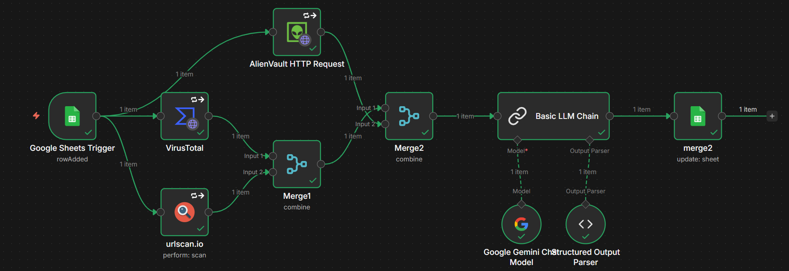
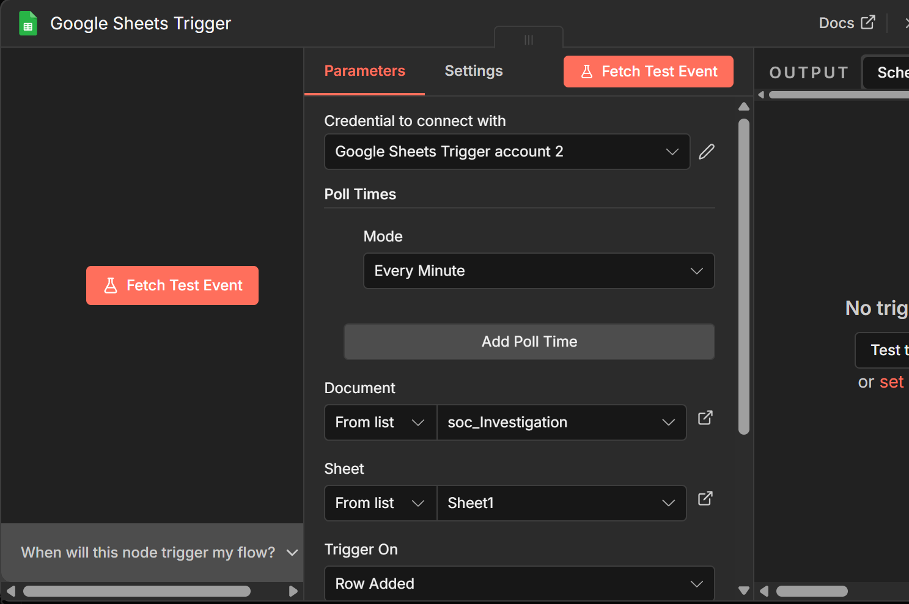
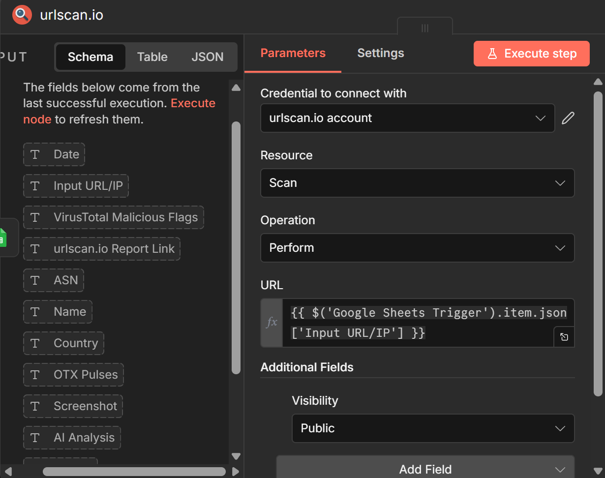
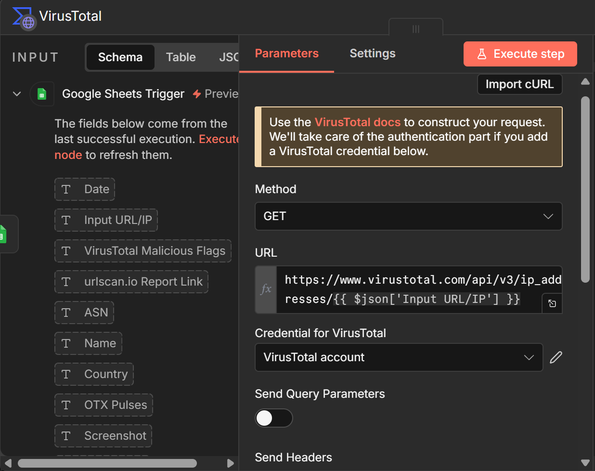
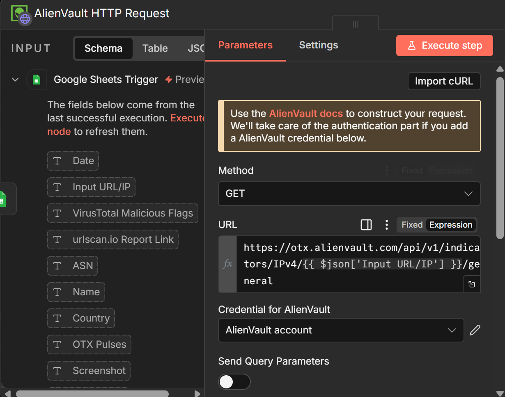
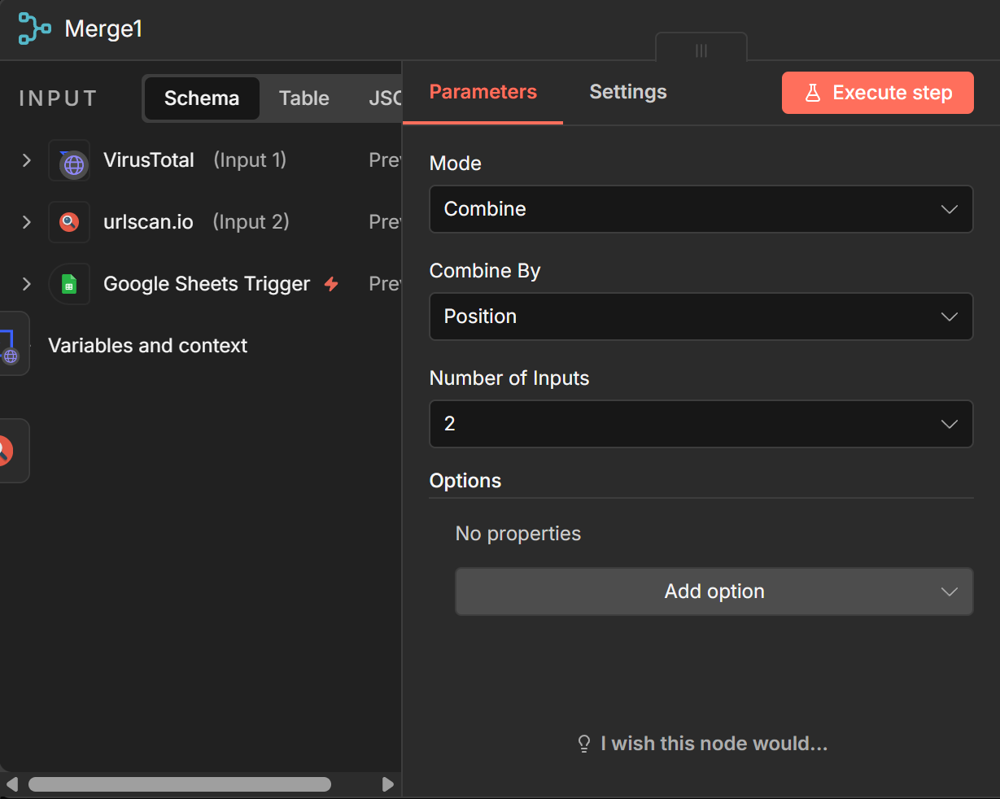
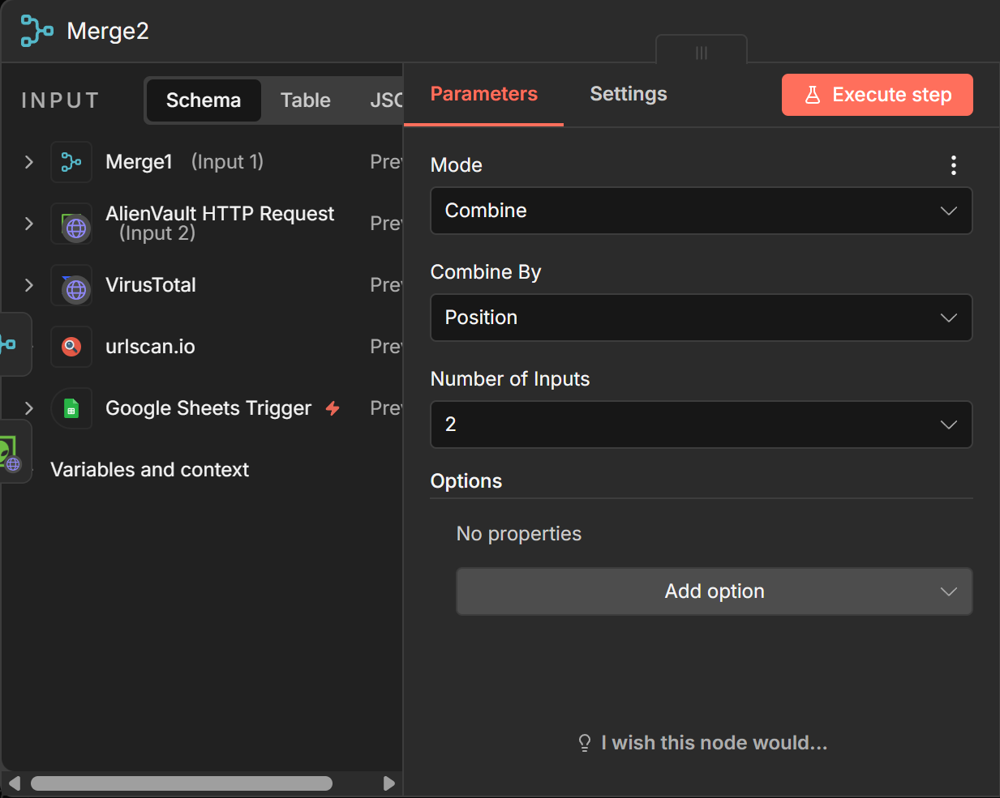
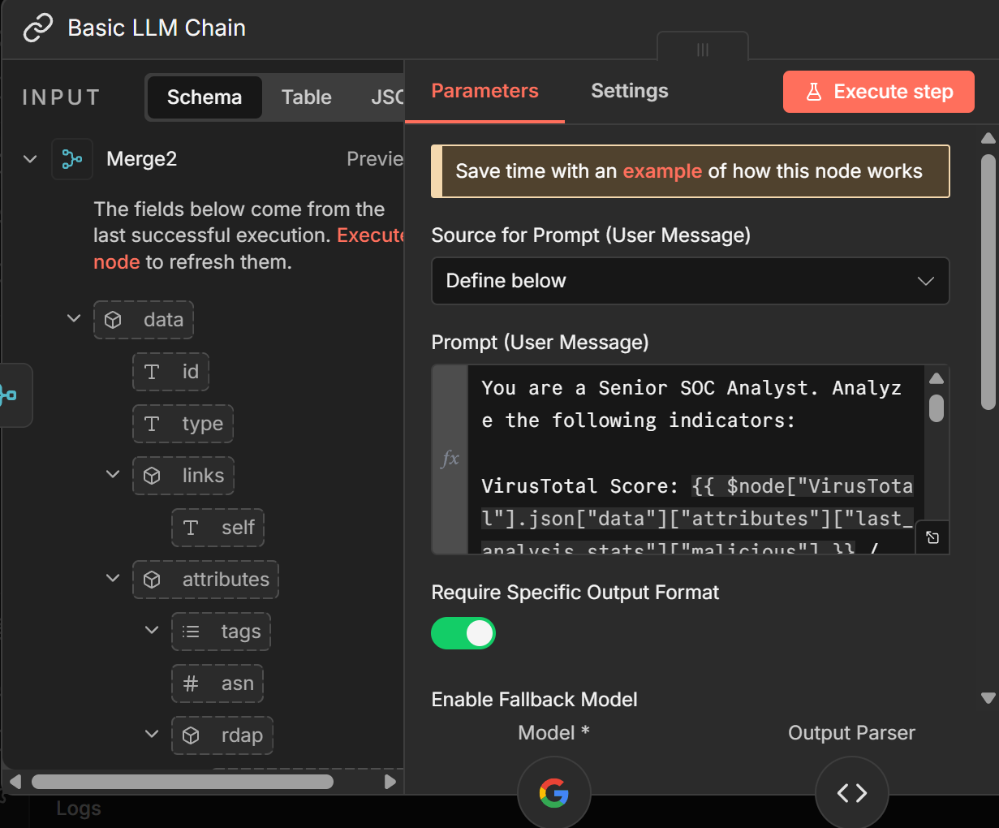
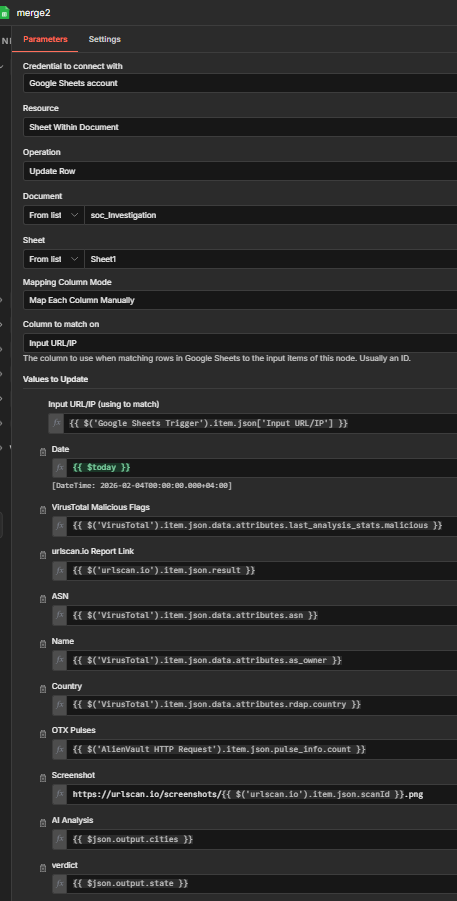
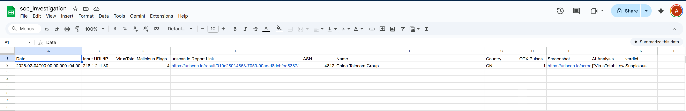

Building an Automated IP & URL Enrichment SOAR Pipeline
As a cybersecurity graduate focused on Security Operations, I’ve seen firsthand how 'alert fatigue' can cripple a SOC. Every minute an analyst spends manually copy-pasting an IP into VirusTotal is a minute they aren't hunting for real threats.
This project is a practical implementation of SOAR (Security Orchestration, Automation, and Response) principles, designed to turn a manual, repetitive triage process into a fully automated intelligence pipeline.
Why is this Automation important for SOC Analysts?
In a typical SOC environment, Tier 1 analysts are bombarded with hundreds of low-level alerts daily. The manual investigation process is flawed for three reasons:
- Time Inefficiency: Manually checking multiple OSINT sources (VirusTotal, AlienVault, urlscan.io) for every single alert takes 5–10 minutes per indicator.
- Human Error: Under pressure, analysts might miss a 'Pulse' in AlienVault or misinterpret a raw JSON score.
- Data Silos: Threat data is often scattered across browser tabs rather than being centralized and analysed in context.
How did this automation make this process more efficient?
To solve this, I built a low-code automation workflow using n8n that functions as a force multiplier for the analyst.The system works in three phases:
- Ingestion: Automatically detects new indicators added to a centralized investigation sheet.
- Multi-Source Enrichment: Queries VirusTotal, AlienVault OTX, and urlscan.io in parallel to gather reputation, campaign history, and visual evidence (screenshots).
- AI Synthesis: Uses a Large Language Model (LLM) to correlate the raw data and generate a human-readable verdict and technical summary.
The result? A comprehensive security report delivered in under 60 seconds, allowing analysts to make informed decisions at a glance.
Note: It is important to only consider this for prioritizing and getting quick and brief details about an alert, but further investigation must be conducted beyond the AI analysis as we are working in a sensitive field where accuracy is crucial and context matters.
The Engine: What is n8n?
n8n is a "Fair-Code" workflow automation platform that is specifically favoured by technical teams and Security Engineers. Think of it as the "Swiss Army Knife" for SOC automation.
Why I chose n8n for this SOAR Project:
- Node-Based Visual Logic: It allows for complex, multi-branching workflows that mimic real-world SOC decision-making. If one tool fails or returns a specific result, the workflow can "branch" and take a different path, something linear tools struggle with.
- Self-Hostable & Secure: Unlike many SaaS platforms, n8n can be self-hosted. For a cybersecurity professional, this is critical because it ensures that sensitive data (like internal IP addresses or API keys) stays within your own controlled environment.
- The "Low-Code" Advantage: It strikes a perfect balance between speed and power. While it has a drag-and-drop interface, it also allows me to inject JavaScript/Python code nodes whenever I need to perform complex data parsing or custom logic.
- Deep API Integration: Using the HTTP Request node, I can connect to virtually any security tool with an API, even if a pre-built connector doesn't exist. This allowed me to seamlessly integrate VirusTotal, AlienVault, and urlscan.io into a single pane of glass.
Technical Architecture & Impact
| Feature | Manual Process | My Automated Workflow |
|---|---|---|
| Triage Time | 5-10 Minutes | < 60 Seconds |
| Tools Checked | 1 at a time (sequential) | 3+ at a time (parallel) |
| Evidence | Manually check screenshots | Screenshot URL ready |
| Final Report | Full manual Report/notes | AI-Generated JSON Summary + Analyst modification |

Step 1: Google Sheets Trigger
The first node that will be added is the Google sheets trigger that triggers whenever a new row has been added.
In this node, you can modify the poll times, which determines the time interval between each time the google sheet is being checked for a new row being added.

Steps 2 & 3: Initial OSINT Enrichment
urlscan.io Scanning
We will then connect the urlscan.io node, to the Google Sheets trigger, where it will perform a scan based on the URL, which is the IP address added into the google sheets row.
Note: We can simply drag the “input URL/IP” field from our google sheets trigger and place it in the URL field.

VirusTotal Integration
Connect the VirusTotal node, to the Google Sheets trigger, where it will perform a scan based on the URL, which is the IP address added into the google sheets row.
Note: We can simply drag the “input URL/IP” field from our google sheets trigger and place it in the URL field.

Step 4: AlienVault OTX
We will then connect the AlienVault node, to the Google Sheets trigger, where it will perform a scan based on the URL, which is the IP address added into the google sheets row.
Note: We can simply drag the “input URL/IP” field from our google sheets trigger and place it in the URL field.

Steps 5 & 6: Merging Data Streams
Since we need to combine all the data collected from the 3 nodes, we will add a merge node as each node can only take an input from 1 node, while a merge node can take input from 2.
Merge 1
Merge 1 will combine VT and urlscan.io as demonstrated below. ]

Merge 2
Merge 2 will combine merge 1 and AlienVault as demonstrated below.

Step 7: AI Synthesis
Add a LLM chain node, where we will enter our prompt to the AI to give us our desired output using key pieces of data collected from the Threat Intelligence Platforms. [a: 51]
This LLM chain node is also connected to a “google gemini chat model”, which is the brains that do the analysis and thinking of the prompt that was given in the LLM chain node.
Sample Prompt:
“You are a Senior SOC Analyst. Analyze the following indicators:
VirusTotal Score: {{ $node["VirusTotal"].json["data"]["attributes"]["last_analysis_stats"]["malicious"] }} / {{ $node["VirusTotal"].json["data"]["attributes"]["last_analysis_stats"]["harmless"] }}{{ $('VirusTotal').item.json.data.attributes.reputation }}
AlienVault Pulses: {{ $('AlienVault HTTP Request').item.json.pulse_info.count }} {{ $('AlienVault HTTP Request').item.json.pulse_info.pulses }}
urlscan.io Verdict: {{ $('urlscan.io').item.json.result }}
ASN/Country: {{ $json.data.attributes.asn }}
Provide your response in valid JSON with these fields:
analysis: A 1-sentence technical summary.
verdict: (Benign, Suspicious, or Malicious)
confidence: A percentage (0-100%) based on how much the tools agree.
reasoning: Explain why you gave that confidence score, including Virustotal, urlscan.io, and data from otx, including the otx pulses and mention in brief what known threat actors is it linked to if available."

Step 8: Updating the Google Sheet
Finally, we will add an “update sheet” google sheet. This node places all the new data collected to the columns from our choosing.
Simply add columns on the google sheets, and you will see them in the node.
To enter an exact value, drag from the input section the field you want to be displayed in a specific column as demonstrated in the screenshot below.

End Product
Based on the values we added on the “merge 2” node, we can finally see the google sheets auto update with the ingested data after the automation was automatically triggered when an IP and date were added into a new row.
